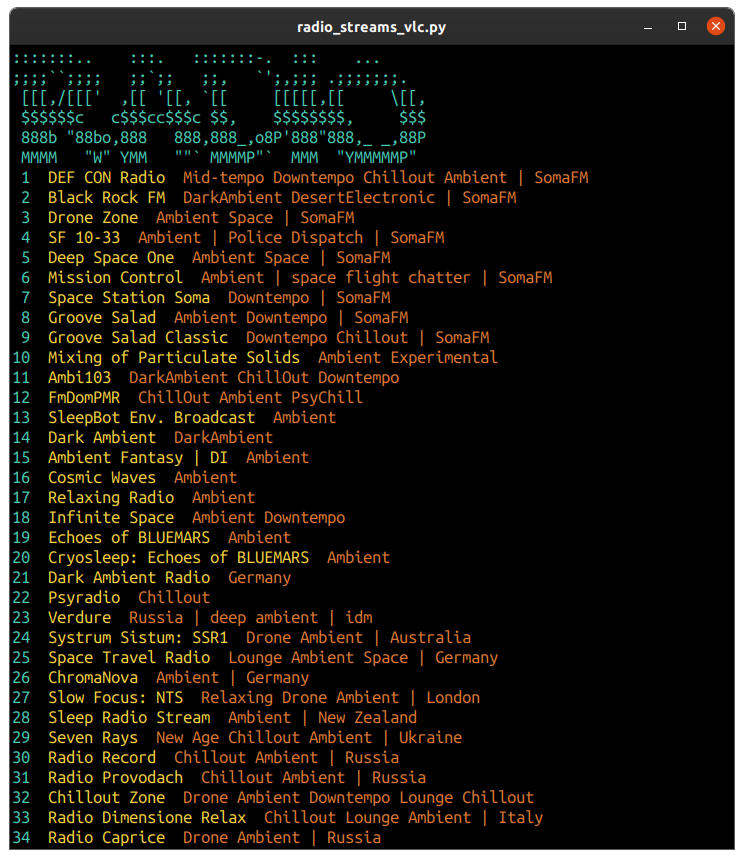
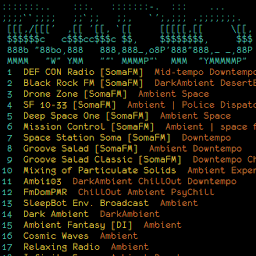

radio_streams_vlc is a VLC wrapper written in Python3, made available under MIT license.
station_selection() wraps the VLC media player, used as a command-line application to stream Internet radio.
This script was tested with Python 3.6.9/PyPy 7.3.0.
export PATH="$PATH:$HOME/scripts"
export PYTHONUSERDIR="$HOME"
$ /snap/bin/pypy3 radio_streams_vlc.py
station_selection() has an open() method which creates a text stream from a CSV database which will be used to generate a CSV reader object for data base iteration.
In the terminal emulator, first an ASCII banner prints, followed by a list of numbered Internet radio station descriptions. The numbers will be used by listeners to manually enter their choice where prompted.
for number, record in enumerate(_reader, 1):
print(f'{cyan}{number:>2}{reset} {yelo}{record[0]:}{reset} {orng}{record[1]}{reset}') # print radio station list
urls[number] = record[2]
The enumerate(_reader, 1) call generates station descriptions with numbers, starting at 1. Which are appended to urls dictionary. The listener enters their choice, which is quickly grabbed from the object's hash table.
The run() method has a similar effect to sourcing a Bash shell script.
If check is true, and the process exits with a non-zero exit code, a CalledProcessError exception will be raised. Attributes of that exception hold the arguments, the exit code, and stdout and stderr if they were captured.[1]
run(['/snap/bin/vlc', '--intf', 'ncurses', urls[station_num]], check=True)
The Python instruction above becomes sourced in a Bash CLI, as demonstrated below:
$ /snap/bin/vlc --intf ncurses https://somafm.com/missioncontrol130.pls
:::::::.. :::. :::::::-. ::: ...
;;;;``;;;; ;;`;; ;;, `';,;;; .;;;;;;;.
[[[,/[[[' ,[[ '[[, `[[ [[[[[,[[ \[[,
$$$$$$c c$$$cc$$$c $$, $$$$$$$$, $$$
888b "88bo,888 888,888_,o8P'888"888,_ _,88P
MMMM "W" YMM ""` MMMMP"` MMM "YMMMMMP"
The ASCII art above comes from ascii_radio.txt which was generated using pyfiglet. A with open() block was used to print the ASCII art from the text stream line by line.
--intf ncurses displays a GUI in the terminal (press 'h' for the help display)

[Desktop Entry]
Version=1.1
Type=Application
Name=Radio Streams VLC
GenericName=Radio Streams VLC
Comment=Displays list of Internet radio stations to choose from.
Icon=/usr/share/icons/foo/256x256/radio_streams_vlc.png
TryExec=xterm
Exec=xterm -fa "monofur" -fs 10 -geometry 90x60+0 -e /home/foo/scripts/radio_streams_vlc/radio_streams_vlc.py
Path=/home/foo/scripts/radio_streams_vlc/
Terminal=true
Actions=
Categories=Audio;Player;
To list available fonts: fc-list | cut -f2 -d: | sort -u | grep -i Mono